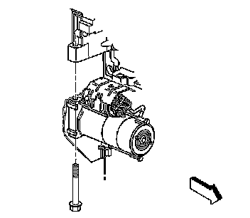
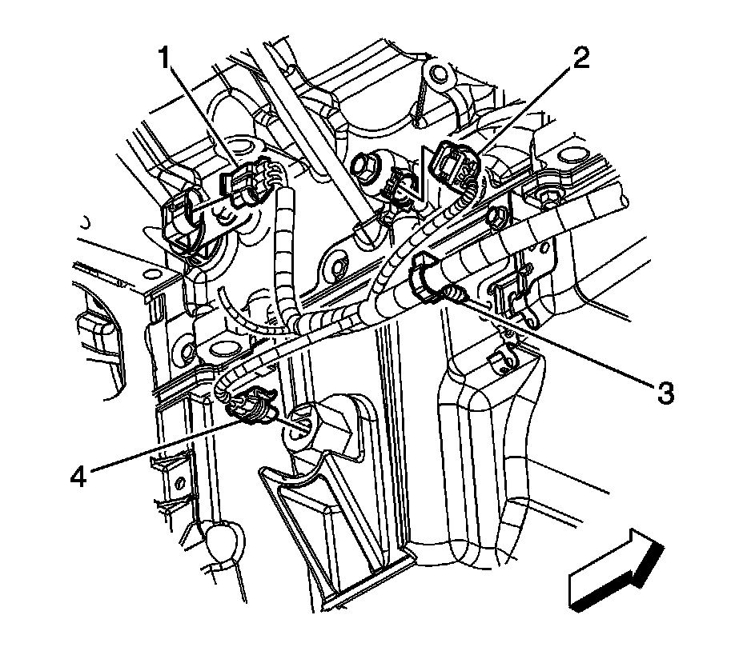

Starter Motor: Service and Repair
STARTER MOTOR REPLACEMENT
REMOVAL PROCEDURE

1. Disconnect the negative battery cable.
2. Raise and support the vehicle. Refer to Vehicle Lifting.
3. For 1500 series vehicles, remove the oil pan skid plate bolts and plate, if equipped.

4. For 2500 series vehicles, remove the front 2 oil pan skid plate bolts, loosen the rear 2 bolts and remove the skid plate, if equipped.
5. Remove the transmission cover bolt.

6. Remove the starter bolts.

7. Disconnect the engine wiring harness electrical connector (4) from the oil level sensor.
8. NOTE: Avoid cable and wiring damage. DO NOT suspend the starter by the cables or wires attached to the solenoid terminals. Use a rope or mechanics wire to suspend the starter.
Slide the starter forward until the starter clears the transmission and properly support the starter.
9. Lower the vehicle half way.
10. Remove the right front wheel and tire.
11. Remove the engine wiring harness lead nut (1).
12. Remove the engine wiring harness lead terminal (2) from the starter.
13. Remove the starter solenoid cable clip bolt (2) from the frame.
14. Remove the starter solenoid cable nut (1).
15. Remove the starter solenoid cable (2) from the starter.
16. Remove the starter out through the wheel well opening.
17. If replacing the starter, unsnap the transmission cover from the starter.
18. If replacing the starter, remove the starter heat shield.
INSTALLATION PROCEDURE
1. If the starter was replaced, install the starter heat shield.
2. If the starter was replaced, snap the transmission cover onto the starter.
3. Install the starter in through the wheel well opening.
4. Install the starter solenoid cable to the starter.
5. NOTE: Refer to Fastener Notice.
Install the starter solenoid cable nut (1).
Tighten the nut to 9 N.m (80 lb in).
6. Position the starter solenoid cable clip to the frame and install the starter solenoid cable clip bolt (2).
Tighten the bolt to 10 N.m (89 lb in).
7. Install the engine wiring harness lead terminal (2) to the starter.
8. Install the engine wiring harness lead nut (3).
Tighten the nut to 3.4 N.m (30 lb in).
9. Position the starter into place.
10. Install the starter bolts.
Tighten the bolts to 50 N.m (37 lb ft).
11. Install the right front wheel and tire.
12. Raise and support the vehicle.
13. Connect the engine wiring harness electrical connector (4) to the oil level sensor.
14. Install the transmission cover bolt.
Tighten the bolt to 9 N.m (80 lb in).
15. For 2500 series vehicles, install the oil pan skid plate and tighten the rear 2 bolts and install and tighten the front 2 bolts, if equipped.
Tighten the bolts to 28 N.m (21 lb ft).
16. For 1500 series vehicles, install the oil pan skid plate and bolts, if equipped.
Tighten the bolts to 28 N.m (21 lb ft).
17. Lower the vehicle.
18. Connect the negative battery cable.